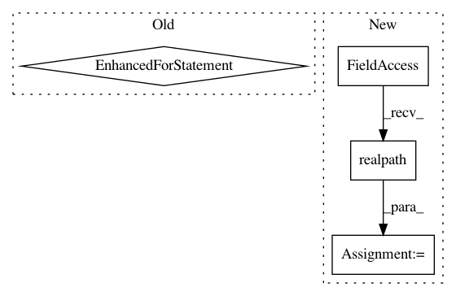

1a4dcfcf867af57839ba8f7f497bfbadf6e17927,src/python/pants/backend/python/tasks/pytest_run.py,PytestRun,_generate_coverage_config,#PytestRun#Any#,194
Before Change
key = canonical.replace(os.sep, ".")
realpaths = set()
add_realpath(canonical)
for path in alternates:
add_realpath(path)
cp.set("paths",
key,
self._format_string_list([canonical] + list(alternates) + list(realpaths)))
After Change
key = canonical.replace(os.sep, ".")
// For the benefit of macos testing, add the "real" paths as equivalents.
paths = OrderedSet([canonical,
alternate,
os.path.realpath(canonical),
os.path.realpath(alternate)])
cp.set("paths", key, self._format_string_list(paths))
// See the debug options here: http://nedbatchelder.com/code/coverage/cmd.html//cmd-run-debug
In pattern: SUPERPATTERN
Frequency: 3
Non-data size: 4
Instances
Project Name: pantsbuild/pants
Commit Name: 1a4dcfcf867af57839ba8f7f497bfbadf6e17927
Time: 2018-01-28
Author: john.sirois@gmail.com
File Name: src/python/pants/backend/python/tasks/pytest_run.py
Class Name: PytestRun
Method Name: _generate_coverage_config
Project Name: deepchem/deepchem
Commit Name: cbeea5ff3282ab1025f4fbda33f86cd014634797
Time: 2018-01-11
Author: zqwu@stanford.edu
File Name: devtools/jenkins/generate_graph.py
Class Name:
Method Name:
Project Name: streamlit/streamlit
Commit Name: 81460887a6dc118719168c98a0d7543b758d2040
Time: 2018-01-17
Author: adrien.g.treuille@gmail.com
File Name: tiny_notebook/protobuf/__init__.py
Class Name:
Method Name: